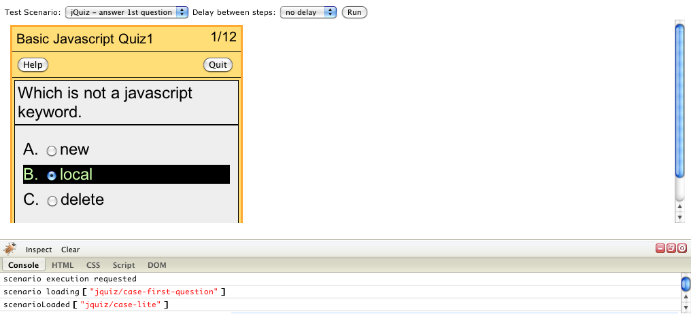

Purpose
When you work on small website development projects, you cannnot always benefit from the help of a tester. You end up having to do it all by yourself.
A good number of services have emerged that allow you to automate unit-testing on headless browsers (jasmine, mocha, qunit, casperjs). But that doesn't guarantee that your code works on all browsers. Anytime you generate a new build, you have to test your websites on several servers and that can be a quite time consuming process.
Here we propose a framework that help semi-automate cross-browser testing. It let you write code that will let you drive the site as if a user was interacting with it.
Overview
Whenever you make a new build, two folders are updated
- build/staging that contains the site that the users will see.
- build/test that present an interface for running your website through different testing scenario.
Within the test environment, the site is included within an iFrame. Firebug Lite is embedded to provide an easy way to display progress information.
Scenarios listed under the "Test scenarios" menu can be added on demand. They typically map a test case listed in the scenarios/jquiz folder.
Demo
On a cloned project, direct your browser to build/test/index.html.
Browser Support
FrameDriver has been tested on the following browsers, using the browserling service.Credits
We used one of the examples of quiz from the jquizme project to generate a site to be subjected to testing (MIT License)
Firebug Lite as cross-browser console (BSD License). Firebug Lite proves particularly useful in environments like browserling where accessing the developer tools can be a bit tedious.
jQuery used to rapidly write code to drive a site (MIT License)
RequireJS used to organize the code in a modular way (BSD or MIT License)
CasperJS used as inspiration for the frameDriver API (MIT License)
GruntJS used as build-tool (MIT License)
Sublime Text 2 used as IDE (Freemium License)
Browserling for offering cross-browser testing tools (Freemium License)
Version
First draft. Not guaranteed to be any stable. Treat as alpha.